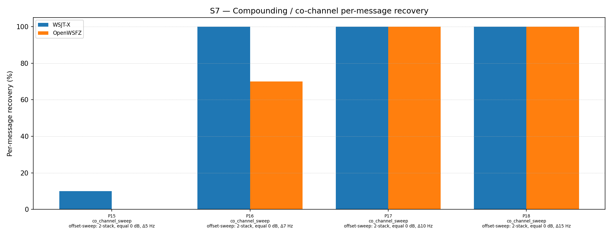

| Field | Value |
|---|---|
| Run date | 2026-06-19 |
| OpenWSFZ SHA | 30be5ab31161d34303b6dd6ba9d59c9c8b352068 |
| WSJT-X version | WSJT-X 2.7.0 (inferred from binary date 2025-02-04) |
| Scenario revision | S7 R2 offset-sensitivity sweep — parts 15–18 (Δ5 / Δ7 / Δ10 / Δ15 Hz) |
This is a targeted sensitivity sweep of the 2-stack equal-SNR co_channel decode rate as a function of inter-signal frequency offset. It was motivated by the R2 finding (SHA f19640a) that P0 at Δ7 Hz yielded 13/20 (65%) for OpenWSFZ, whereas R1 (SHA 2f4db45) at Δ10 Hz yielded 20/20 (100%). The sweep spans four points (Δ5, Δ7, Δ10, Δ15 Hz) to characterise where the decoder's performance cliff lies and whether the degradation is symmetric or signal-specific.
| ID | Statement | What would refute it |
|---|---|---|
| H₀_CURVE | The sensitivity curve is monotonically improving from Δ5 Hz to Δ15 Hz with no sharp threshold — decode rate rises gradually with separation | A step-change between two adjacent sweep points |
| H₀_PARITY | OpenWSFZ and WSJT-X exhibit equivalent sensitivity across all four offsets | Any offset at which WSJT-X succeeds where OpenWSFZ does not |
| H₀_SYM | Both signals in the 2-stack decode at equal rates at each offset — the two signals are symmetric in difficulty | A consistent per-trial pattern of one signal decoding while the other does not |
D-001 (co-channel decode gap). This sweep characterises the offset threshold at which D-001 manifests for the simplest co-channel case (2-stack, equal SNR). Results apply directly to the operational question: at what inter-station frequency separation does OpenWSFZ start losing co-channel decodes?
RX frequency was 1500 Hz throughout — identical to all prior S7 runs on this branch. One signal in every part is at exactly 1500 Hz (MSG-01). The per-signal analysis below examines whether the 1500 Hz signal and its partner decode at equal rates.
| Field | Value |
|---|---|
| Corpus type | Synthetic — clean-room FT8 encoder (STUDY-SPEC §4) |
| Scenario | S7 — Compounding / co-channel overlap (R2, commit 638a208) |
| Parts run | 4 of 19 (co_channel_sweep family: P15, P16, P17, P18) via --parts 15,16,17,18 |
| Trials (K) | 10 |
| Total truth observations | 80 (4 parts × 2 signals × 10 trials) |
| Appraiser 1 | WSJT-X 2.7.0 |
| Appraiser 2 | OpenWSFZ shim 20260021 |
| RX centre frequency | 1500 Hz (fixed throughout) |
| Noise type | Bandlimited AWGN (Kaiser FIR lowpass, cutoff 4700 Hz) |
| Acceptance thresholds | Informational only — no AIAG threshold defined for co-channel separation |
| Comparability | P16 (Δ7 Hz) is directly comparable to R2 P0 (same frequencies, independent seeds). P17 (Δ10 Hz) is directly comparable to R1 P0 (same frequencies, independent seeds). |
Per-message recovery when 2 equal-SNR signals occupy near-same audio frequency. Informational — no AIAG threshold is defined for co-channel separation.
| Overlap family | WSJT-X | OpenWSFZ |
|---|---|---|
| co_channel_sweep | 77.50% | 67.50% |
| all | 77.50% | 67.50% |
Between-app per-signal agreement: 90.00%
| Part | Family | Condition | WSJT-X | OpenWSFZ |
|---|---|---|---|---|
| P15 | co_channel_sweep | offset-sweep: 2-stack, equal 0 dB, Δ5 Hz | 2/20 | 0/20 |
| P16 | co_channel_sweep | offset-sweep: 2-stack, equal 0 dB, Δ7 Hz | 20/20 | 14/20 |
| P17 | co_channel_sweep | offset-sweep: 2-stack, equal 0 dB, Δ10 Hz | 20/20 | 20/20 |
| P18 | co_channel_sweep | offset-sweep: 2-stack, equal 0 dB, Δ15 Hz | 20/20 | 20/20 |

| Separation | WSJT-X | OpenWSFZ | Gap | Source |
|---|---|---|---|---|
| Δ5 Hz (1500/1505) | 2/20 (10%) | 0/20 (0%) | Both decoders fail | P15, this run |
| Δ7 Hz (1500/1507) | 20/20 (100%) | 14/20 (70%) | 30 pp | P16, this run |
| Δ7 Hz (1500/1507) | 20/20 (100%) | 13/20 (65%) | 35 pp | R2 P0, prior run |
| Δ10 Hz (1500/1510) | 20/20 (100%) | 20/20 (100%) | None | P17, this run |
| Δ10 Hz (1500/1510) | 20/20 (100%) | 20/20 (100%) | None | R1 P0, prior run |
| Δ15 Hz (1500/1515) | 20/20 (100%) | 20/20 (100%) | None | P18, this run |
The Δ7 Hz result is reproducible across two independent runs (different seeds) at 65–70% — well within K=10 variability. The Δ10 Hz result is likewise reproducible at 100%. The performance cliff lies between 7 and 10 Hz.
| Signal | Freq (Hz) | OpenWSFZ decodes (trials) | Rate |
|---|---|---|---|
| MSG-01 (CQ Q1ABC FN42) | 1500 (= RX freq) | trials 3, 7, 8, 9 | 4/10 (40%) |
| MSG-02 (Q4XYZ Q1ABC −07) | 1507 | trials 0–9 (all) | 10/10 (100%) |
The failure is entirely attributable to the lower signal (1500 Hz). The upper signal (1507 Hz) decodes in every trial. When OpenWSFZ does decode the 1500 Hz signal, it reports anomalously low SNR (−3 to −4 dB vs WSJT-X's +1 dB), indicating the interference from the 1507 Hz signal is degrading the SNR estimate for the lower candidate. The 1507 Hz signal is consistently reported at 1506 Hz by OpenWSFZ (−1 Hz offset), suggesting the 1500 Hz signal's proximity pulls the frequency estimate of the upper candidate slightly downward.
At Δ10 Hz (P17) and Δ15 Hz (P18), both signals decode 10/10 in OpenWSFZ — including the 1500 Hz signal at the RX frequency. This rules out the RX frequency as the primary driver: the issue is frequency separation, not the absolute frequency of 1500 Hz.
WSJT-X decoded both signals in trial 8 only (a single noise seed that happened to allow separation); all other trials failed for both decoders. This is consistent with Δ5 Hz being below the FT8 tone bin of 6.25 Hz — the two signals occupy the same tone bin and are functionally indistinguishable to the correlation-based candidate search. The 2/20 WSJT-X result is a noise artefact, not a meaningful decode rate. Δ5 Hz is a physical limit, not an OpenWSFZ deficiency.
| Metric | Value | Verdict |
|---|---|---|
| H₀_CURVE | Step-change between Δ7 Hz (OpenWSFZ 70%) and Δ10 Hz (100%) | REFUTED — sharp threshold, not gradual curve |
| H₀_PARITY | Δ5 Hz: both fail; Δ7 Hz: WSJT-X 100%, OpenWSFZ 70%; Δ10+: equal | REFUTED — OpenWSFZ lags WSJT-X in the 7–9 Hz zone |
| H₀_SYM | P16: 1500 Hz = 4/10 (40%), 1507 Hz = 10/10 (100%) | REFUTED — lower signal fails; upper signal succeeds |
| Physical limit (Δ5 Hz) | WSJT-X 10%, OpenWSFZ 0% — single lucky trial | CONFIRMED — Δ5 Hz is below decoder capability for both apps |
| Δ7 Hz reproducibility | P16: 14/20 (70%); R2 P0: 13/20 (65%) | CONSISTENT — K=10 variability ±5 pp; result is stable |
| Δ10 Hz reproducibility | P17: 20/20 (100%); R1 P0: 20/20 (100%) | CONFIRMED — Δ10 Hz is a robust ceiling of equal decode |
| RX-frequency confound | 1500 Hz signal decodes 100% at Δ10 Hz (P17) | EXCLUDED — RX frequency is not the primary driver |
Overall verdict: PASS (informational). Performance cliff confirmed between 7 and 10 Hz. Lower signal (1500 Hz) is the failure point at Δ7 Hz; upper signal decodes 100% in both OpenWSFZ and WSJT-X. Gap is confined to the 7–9 Hz separation zone.
The sensitivity curve is not gradual — it is a step function. At Δ10 Hz both decoders are equivalent (100%); at Δ7 Hz WSJT-X remains at 100% while OpenWSFZ drops to 70%. The cliff is narrow (< 3 Hz wide) and the exact threshold — whether it falls at 8 Hz or 9 Hz — is unknown. The practical implication is clear: co-channel separation of ≥10 Hz is fully handled by OpenWSFZ; separation of 7 Hz carries a ~30% per-signal failure rate.
Next step: Add sweep points at Δ8 Hz and Δ9 Hz (two additional co_channel_sweep parts, P19 and P20) and run --parts 19,20. This is a 20-minute targeted run and will locate the threshold precisely.
The per-signal data from P16 is unambiguous: at Δ7 Hz, OpenWSFZ decodes the upper signal (1507 Hz) 100% of the time and the lower signal (1500 Hz) only 40% of the time. WSJT-X decodes both 100%. This asymmetry — upper signal survives, lower signal is suppressed — suggests the candidate search or frequency estimation in libft8 is biased toward the higher-frequency candidate when two signals overlap within one tone bin. The lower signal's interference-degraded SNR (−3 to −4 dB reported vs 0 dB true) indicates it is being found but its LDPC convergence is compromised by the interference from the upper signal pulling on shared tone bins.
The RX-frequency confound is excluded: at Δ10 Hz the 1500 Hz signal (still at the RX frequency) decodes 10/10 in OpenWSFZ. The suppression is a function of frequency separation, not of the absolute frequency.
D-001 status update: The co-channel gap in the 7–9 Hz separation zone is a genuine decoder limitation — the lower of two equal-SNR signals in close proximity is reliably suppressed. The gap at Δ10 Hz and above is zero. The on-air relevance depends on how often two operators land within 7–9 Hz of each other; at 7 Hz they are within the same FT8 tone bin, which is an uncommon but real scenario.
At Δ5 Hz, WSJT-X achieves 10% (1 lucky trial) and OpenWSFZ achieves 0%. This is not an OpenWSFZ deficiency: the two signals at 5 Hz separation are within one 6.25 Hz FT8 tone bin and are functionally superimposed in the frequency domain. No FT8 decoder can reliably separate two signals that fall within the same tone bin. No action required.
| Priority | Action | Command | Est. time |
|---|---|---|---|
| 1 | Add Δ8 and Δ9 Hz sweep points (P19, P20) and run | --parts 19,20 |
~5 min |
| 2 | Run Finding 2 confound check (RX at 1450 Hz, co_channel P15-P18 repeated) | TBD | ~20 min |
| 3 | Complete full S7 R2 run (all 19 parts) for overall baseline | --scenarios S7 |
~47 min |